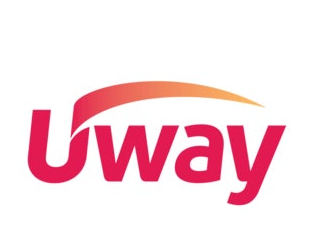

유웨이라고 수시 접수 사이트가
원래 6시까지 등록 마감인데
마지막까지 간보다가 10분전에 지원하는애들때문에 서버 터져서 지원 못하게되는애들 생김
그거때문에 모집시간을 한시간 늘렸는데 갑자기 유웨이 개찐빠짓으로 최종경쟁률이 공개되면서 기존에 등록 못하고 추가 모집시간에 등록한애들이
최종 경쟁률 보면서 개꿀빨고 펑크난 학과나 안정인 학과 지원해서 기존에 제시간에 등록한 지원자들 탈락확률 높아짐
입시 요강이나 학교 선생님들이 모집마감시간 최소 30분전에 지원해야한다고 안그러면 서버 터져서 등록 못하는경우 생긴다고 존나 강조했는데
오히려 ㅈㄴ 늦게등록한애들이 개꿀을 빨아버림
세줄요약 : 수시등록 사이트가 터짐
그래서 늦게 등록한 애들이 학과 학교 경쟁률 보고 지원이 가능해짐
먼저 지원한 애들만 병신됨
와 이건 좀 개빡시네